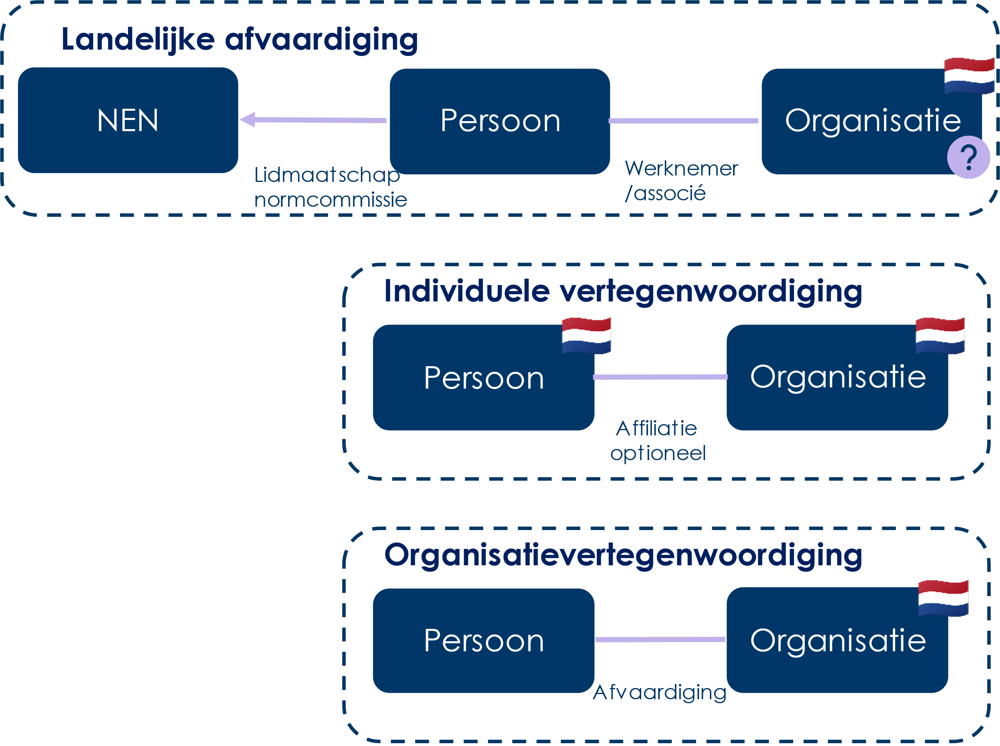

Titel staat in config.js
ICTU Document
Document
- Redacteur:
- Auteur:
Dit document valt onder de volgende licentie:

Creative Commons Attribution 4.0 International Public License
Dit document valt onder de volgende licentie:
Creative Commons Attribution 4.0 International Public License
Tekst
Dit is een document zonder officiële status.
Inleiding 81.1. Aanleiding onderzoek
1.2. Standaardisatie als een strategisch instrument
Onderzoeksvragen 102.1. Scope en overwegingen
Methode van onderzoek 123.1 Kwantitatieve gegevensparticipatie
4.1. Trends in Nederlandse vertegenwoordiging
4.1.1. Overzicht van beschikbare gegevens
4.1.2. Nederlandse participatie per organisatietype
4.1.3. Nederlandse participatie over tijd
4.1.4. Aantal participaties over tijd
4.1.5. Aantal participerende organisaties over tijd
4.2. Nederlandse vertegenwoordiging in formele rollen
4.2.1. Formele rollen bij 3GPP, ETSI, IETF en W3C
4.2.3. Reflectie op de rol van multinationals
4.3. Het ontstane beeld na analyse van de data
5. Onderzoeksvraag 2: Wat drijft de betrokkenheid van de verschillende Nederlandse organisaties? 23
5.1.1. Belang voor de organisatie
5.1.2. Collectief belang en sectoraal belang
5.1.3. Persoonlijke motivatie van deelnemers
5.1.4. Uitdagingen vanuit organisatieperspectief
5.2. Betrokkenheid in de toekomst
5.3. Het ontstane beeld na analyse van de interviews
6.2. Informatie opgehaald uit de interviews
6.2.1 Wenselijke strategische aanpak van de Rijksoverheid6.2.2. Wenselijke coördinatie en ondersteuning van de Rijksoverheid
6.2.3. Wenselijke kennis, samenwerking en educatie
6.3.1. Vergelijking Nationale Normalisatieagenda met opgehaalde wensen
7. Eindconclusies en aanbevelingen 33
7.1. Conclusies in meer detail
7.2. Aanbevelingen voor de Nederlandse overheid
De laatste jaren is er op Europees niveau veel te doen over standaardisatiestrategie en governance van standaardisatieorganisaties. Deze ontwikkelingen hebben een bijzondere relevantie voor Forum Standaardisatie vanwege haar activiteiten op het gebied van ICT-standaarden.
Standaardisatie biedt Nederland voordelen en kansen voor innovatie, interoperabiliteit, efficiëntie en kwaliteitsverhoging. De EU en Nederland streven naar digitale soevereiniteit, naar minder afhankelijkheid van technologieën uit niet-EU-landen. Dit is aanleiding voor Forum Standaardisatie om de positie en participatie van Nederland in internationale standaardisatie nader te laten evalueren.
In 2024 met uitloop naar 2025 heeft ICTU met Dialogic op verzoek van Forum Standaardisatie een onderzoek uitgevoerd naar de Nederlandse publieke en private vertegenwoordiging bij Europese en internationale ICT-standaardisatieorganisaties. De rapportage van dit onderzoek presenteert de resultaten en doet aanbevelingen over hoe de overheid de verdediging van Nederlandse publieke en private belangen in Europese en internationale ICT-standaardisatie kan versterken en stimuleren.
Drie primaire onderzoeksvragen
De primaire onderzoekvragen richten zich op 1] hoe Nederlandse belanghebbenden zijn vertegenwoordigd in internationale standaardisatie-organisaties, 2] op hun drijfveren voor betrokkenheid en op 3] wat de overheid kan doen om deelname te vergroten.
Kwantitatieve en kwalitatieve methoden zijn ingezet waarbij een dataset is opgebouwd van 468.215 participaties in standaardisatie-initiatieven. Er zijn interviews met 34 organisaties gehouden en elf standaardisatie-organisaties (SDO’s) zijn bevraagd over de drie onderzoeksvragen.
Voornaamste bevindingen bij de onderzoeksvragen
*Hoe zijn Nederlandse belanghebbenden vertegenwoordigd ten opzichte van belanghebbenden uit andere landen in internationale standaardisatie-organisaties? *
Een groeiende participatie in absolute zin
Op basis van de verzamelde gegevens lijkt sprake te zijn van een groeiende participatie in absolute zin en in het aantal organisaties dat namens Nederland deelneemt.
Een sterke Nederlandse vertegenwoordiging op gebieden waar Nederland een sterk (economisch) belang heeft
Omdat Nederland zich meer dan andere landen richt op thema’s waar zij een sterk economisch belang heeft- denk aan Quantum, AI en betaaldiensten-, is de participatie aan die betreffende standaardisatie goed vertegenwoordigd. Op andere onderwerpen lijkt participatie juist sporadischer te zijn dan die van andere landen. Geïnterviewden leggen daarbij het verband met het ontbreken van kennis binnen de overheid op deze onderwerpen.
De Nederlandse invloed van organisaties op standaardisatie is niet vast te stellen op basis van enkel het aantal participaties omdat niet gemeten kan worden hoeveel impact de invloed op een standaard heeft.
Wat drijft de betrokkenheid van de verschillende Nederlandse organisaties?
Waarom hebben partijen hun betrokkenheid vermeerderd of verminderd?
Wat verwachten ze in de toekomst te gaan doen.** **
Strategische voordelen en vroegtijdige inzichten zijn drijfveren voor betrokkenheid
Actieve deelname levert organisaties strategische voordelen op zoals het beïnvloeden van standaarden, vergroten van marktaandeel, verbeteren van internationale standaarden en waarborgen van productveiligheid. Bij passieve deelname krijgen organisaties vroegtijdig inzicht in nieuwe ontwikkelingen, waardoor zij snel kunnen reageren. Deelname draagt vaak bij aan een collectief of sectoraal belang.
Verminderde betrokkenheid door drempels, zoals gebrek aan kennis, tijd, middelen, capaciteit en vaak pas voordelen op langere termijn
Veel organisaties hebben niet de kennis, tijd, middelen en capaciteit om actief deel te nemen. Bij management en bestuurders lijkt onvoldoende bekendheid met het onderwerp te leiden tot een gebrek aan betrokkenheid. Standaardisatieprocessen duren lang en zijn complex, wat deelname verder bemoeilijkt. Opbrengsten en voordelen worden pas op de langere termijn zichtbaar. Dit alles leidt ertoe dat standaardisatie vaak onvoldoende tot geen prioriteit krijgt.
**Er is een lichte daling in de relatieve deelname van Nederlandse organisaties ten opzichte van de overige landen. **
Hoewel standaardisatie steeds meer wordt gezien als strategisch instrument is ook sprake van bezuinigingen en beperktere mogelijkheden voor intensieve deelname.
In de toekomst verwachten Nederlandse organisaties geen uitbreiding van activiteiten.
Wanneer er toch wordt gedacht aan extra activiteiten, richt men zich op strategische onderwerpen zoals AI en digital wallets en op operationele onderwerpen zoals procurement en invoicing.
**Voornaamste aanbevelingen **
Wat kan de overheid doen om de Nederlandse deelname in belangrijke Europese en internationale standaardisatieprocessen te vergroten of beter af te stemmen?
*Hoe kan de overheid de verdediging van Nederlandse publieke en private belangen in Europese en internationale ICT-standaardisatie versterken? *
**De Nederlandse overheid heeft al aanzienlijke stappen gezet in het bevorderen van standaardisatie en samenwerking tussen publieke en private sectoren. Het voortzetten en verder versterken van deze inspanningen, levert Nederland profijt. Door als overheid en bedrijfsleven de krachten te bundelen, ontstaat optimale en efficiënt ingezette participatie aan standaardisatie. De standaarden vormen zo enerzijds de basis van innovatie en duurzaamheid en anderzijds bieden ze effectief bescherming van de Nederlandse waarden en de concurrentiepositie in het internationale speelveld. **
Aanvullend worden de volgende aanbevelingen gegeven.
Beleidskoers en visie
Versterking van Nederlandse belangen in ICT-standaardisatie vereist het door de overheid ontwikkelen van een duidelijke beleidskoers en visie op standaardisatie die uitgedragen kan worden naar organisaties en de Europese Commissie (EC). Dit betekent:
• Duidelijk beeld hebben van Nederlandse prioriteiten en positie van de Nederlandse overheid ten opzichte van deelname aan standaardisatie activiteiten
• Gedegen afwegingskaders opstellen met criteria voor inzet op standaardisatieactiviteiten (zoals AI-standaarden, die transparantie, eerlijke besluitvorming en uitlegbaarheid bevorderen, terwijl bedrijven binnen dergelijke kaders kunnen innoveren)
• Keuzes maken over inhoudelijke onderwerpen waarop inzet op standaarden nodig is
Ook is het van belang dat de overheid kritisch kijkt naar de toegevoegde waarde van voorgestelde geharmoniseerde standaarden in EU-regelgeving (denk aan het voeren van publiek-private dialogen) en ondersteuning biedt bij de implementatie van deze standaarden voor het Nederlandse bedrijfsleven. Zo kunnen organisaties proactief inspelen op veranderingen in de markt en de technologie, wat hun positie op lange termijn zal versterken.
Voortouw nemen bij het coördineren van standaardisatie-activiteiten en faciliteren van samenwerking
Aanbevolen wordt dat de overheid een meer actieve coördinerende rol oppakt in onderwerpen om bewustwording van urgentie en meerwaarde van standaardisatie te vergroten. Daaronder vallen onderwerpen als:
Proactief regisseren op inzet van relevante standaardisatie-activiteiten
Monitoring en signalering van relevante standaardisatie-activiteiten
Het mogelijk maken van strategische prioritering van standaardisatie-activiteiten
Bevordering van (multidisciplinaire) samenwerking tussen de overheid, industriesectoren en de wetenschap
Borging van neutraliteit in de ontwikkeling van standaarden en daarmee het beschermen van maatschappelijk/publieke waarden
Stimuleren van de toegankelijkheid van standaardisatie(-activiteiten)
Tenslotte wordt aanbevolen de drempels aan te pakken die volgens geïnterviewden deelname aan standaardisatie belemmeren. Daarbij wordt gedacht aan:
**Tot slot **
Uit dit onderzoek komt naar voren dat de huidige inzet van zowel de overheid als het bedrijfsleven verder kan worden aangevuld en geoptimaliseerd om zo gerichter aan participatie aan standaardisatie-activiteiten voor Nederland te kunnen werken.
Nederland is sterk als het aankomt op standaardisatie voor economisch gedreven thema’s. Er ligt een kans om ook op andere thema’s meer invloed uit te oefenen.
De digitalisering van onze samenleving groeit in een steeds sneller tempo en standaardisatie speelt hierin een cruciale rol. Standaarden zijn namelijk essentieel om interoperabiliteit, veiligheid en innovatie te bevorderen in een wereld waarin digitale technologieën de grenzen overstijgen. De Europese Commissie erkent standaardisatie als een strategisch instrument om de digitale soevereiniteit van Europa te waarborgen en de Europese belangen en waarden te verdedigen. Tegen deze achtergrond heeft ICTU van Forum Standaardisatie de opdracht gekregen om te onderzoeken hoe Nederlandse publieke en private organisaties deelnemen aan Europese en internationale standaardisatie. De opdracht heeft als doel inzicht te verschaffen in de Nederlandse vertegenwoordiging binnen standaardisatie-organisaties op het gebied van ICT, zowel op Europees als internationaal niveau. Daarnaast wil Forum Standaardisatie begrijpen welke factoren mogelijk bijdragen aan of belemmeren dat Nederlandse partijen actiever hun belangen vertegenwoordigen. ICTU heeft onderzoeksbureau Dialogic betrokken bij het onderzoek, primair voor het uitvoeren van kwantitatieve analyses.
Dit onderzoek is van belang voor beleidsmakers omdat het inzicht biedt in de mate van betrokkenheid van Nederland bij internationale standaardisatieprocessen; in de effectiviteit van deze betrokkenheid en in de mogelijke verbeteringen. Door goed te begrijpen waar en waarom Nederland wel en niet actief is, kunnen strategische beslissingen worden genomen om de positie van Nederland in internationale standaardisatie te versterken.
Ook kan de overheid met deze inzichten gericht actie ondernemen om de participatie te bevorderen van Nederlandse organisaties in strategisch belangrijke standaardisatietrajecten.
1.1 Aanleiding onderzoek
Op Europees niveau groeit de aandacht voor standaardisatiestrategie en governance van standaardisatie-organisaties, getuige ook het recent opgerichte High Level Forum on European Standardisation en de publicatie van de ‘EU Strategy on Standardisation’ door de Europese Unie.
Gezien het groeiende belang van standaardisatie in waardengedreven digitalisering en digitale soevereiniteit, wil Forum Standaardisatie inzicht kunnen geven in de participatie van Nederlandse publieke- en private organisaties in Europese standaardisatie-organisaties. De achterliggende vraag is: heeft Nederland voldoende vertegenwoordiging in standaardisatie-organisaties en -activiteiten van strategisch belang? Kan de overheid hierin een stimulerende rol spelen?
De strategische waarde van standaardisatie is de laatste jaren sterk toegenomen. Standaardisatie is van belang voor:
Waardengedreven digitalisering: de EU streeft naar digitalisering die niet alleen economisch van belang is, maar ook ethisch en maatschappelijk verantwoord. Denk hierbij aan standaarden voor kunstmatige intelligentie die discriminatie tegengaan of richtlijnen voor cybersecurity die privacy en gegevensbescherming garanderen.
Digitale soevereiniteit: de EU wil minder afhankelijk zijn van technologieën, standaarden en de leveranciers daarvan uit landen buiten de EU, zoals de Verenigde Staten en China. Door zelf geharmoniseerde standaarden te ontwikkelen die zijn gekoppeld aan EU-wetgeving, moet dit betere mogelijkheden bieden voor de EU om een eigen koers te varen en ervoor zorgen dat Europese bedrijven concurrerend blijven. Tegelijk promoot de Europese Commissie EC-normen bij de drie internationale standaardisatie-organisaties (ISO, IEC en ITU).
Complexiteit en concurrentie: op internationaal vlak groeit naast het aantal en de typen organisaties dat zich met standaardisatie bezighoudt, ook de complexiteit van de onderwerpen waarvoor standaarden worden ontwikkeld. Voor Nederland is het daarom belangrijk om gericht te investeren in deelname aan díe standaardisatie-organisaties waar strategische belangen op het spel staan, zoals de handelspositie, het concurrentievermogen en de digitale soevereiniteit.
Dit onderzoek richt zich op drie hoofdvragen om een helder beeld te krijgen van de huidige situatie en de mogelijke verbeterpunten:
Hoe zijn Nederlandse belanghebbenden ten opzichte van andere landen vertegenwoordigd in internationale standaardisatie-organisaties?
Hoe heeft zich dit over de afgelopen vijf jaar ontwikkeld? (Kwantitatief antwoord)
Wat drijft de betrokkenheid van de verschillende Nederlandse organisaties?
Waarom hebben partijen hun betrokkenheid vermeerderd of verminderd?
Wat verwachten ze in de toekomst te gaan doen? (Kwalitatief antwoord)
Wat kan de overheid doen om de Nederlandse deelname in belangrijke Europese en internationale standaardisatieprocessen te vergroten of beter af te stemmen?
(Beleidsmatig advies)
Deze vragen worden beantwoord op basis van onderzoek bij de volgende 11 organisaties (zie bijlage A voor een nadere duiding van deze organisaties):
Drie internationale standaardisatie-organisaties: ITU, ISO en IEC.
Drie Europese standaardisatie-organisaties: CEN, CENELEC en ETSI.
Vijf standaardisatie-organisaties, consortia en samenwerkingsverband: IETF, IEEE, W3C, OASIS en 3GPP.
Om deze vragen te beantwoorden is empirisch onderzoek uitgevoerd en zijn de resultaten hiervan gerelateerd aan actuele beleidsstukken, in het bijzonder: 1) Kamerstuk 36 410 XIII met betrekking tot de bevindingen uit de evaluatie van het Nederlands Normalisatie Instituut en 2) De Nationale Normalisatieagenda (versie december 2024, nog niet gepubliceerd document van het ministerie van Economische Zaken).
Het voornemen is om het onderzoek elke drie tot vijf jaar te herhalen.
Het onderzoek betreft zowel een kwantitatief als kwalitatief als deel. Voor het kwalitatieve deel zijn in totaal 34 organisaties geïnterviewd. De keuze van deze organisaties is primair gebaseerd op het belang voor Nederland van de ICT-standaard die wordt ontwikkeld. Verder is er gezocht naar een goede balans tussen Standards Development Organisations (SDO’s), de grootte en het type van de organisatie en bedrijfsleven versus (semi-)overheid. Op verzoek van Bureau Forum Standaardisatie zijn gedurende dit onderzoek ook vier organisaties gelieerd aan de Europese Commissie (EC) in de scope van het onderzoek opgenomen en ook Global Standands One (GS1) als een van de SDO’s.
Aantal geïnterviewden per sector in scope van het onderzoek:
Distributie en Logistiek: 1
Energie en petrochemie: 2
Financiële dienstverlening: 4
Ingenieursdiensten en Consultancy: 3
Overheid (EU): 4
Overheid en Publieke Sector (NL): 10
Retail: 1
Technologie en IT-dienstverlening: 9
Het onderzoek beperkt zich tot het bepalen van waar en hoe Nederland is vertegenwoordigd in Europese en internationale standaardisatie-organisaties en activiteiten. Het onderzoek is niet gericht op individuele ICT-standaarden of technologieën, maar op het niveau van organisaties, commissies of werkgroepen.
In dit rapport is een advies opgenomen over wat de overheid kan doen om Nederlandse participatie in strategische Europese en internationale standaardisatieonderwerpen te stimuleren. Er wordt geen oordeel gegeven over de vraag of Nederland ‘voldoende’ vertegenwoordigd is.
De onderzoeksmethode naar de Nederlandse participatie in Europese- en internationale standaardisatie, is beschreven in een separaat document.
Deze bevat:
Een verdere uitwerking van de herkomst van de gegevens van participaties.
Een verdere uitwerking van de resultaten per SDO.
De uitgesplitste cijfers over de participatie.
Voor de kwantitatieve analyse van de participatie van Nederlandse organisaties in internationale normalisatieprocessen zijn gegevens verzameld van de websites en portalen van de SDO’s en is een dataset beschikbaar gesteld door het Forum Standaardisatie.
Figuur 1. Representatievormen voor Nederlandse vertegenwoordiging
De beschikbaarheid van gegevens varieerde per SDO. Voor een overzicht hiervan, zie de (afzonderlijke) methodologische rapportage.
Om de participatie van alle SDO’s te kunnen vergelijken is een uniform datamodel opgesteld. De gegevens van alle SDO’s zijn hierin verwerkt:
Optioneel: Persoon X
Optioneel: Namens organisatie Y
Is lid van/vervult formele rol/ neemt deel aan overleg/dient contributie in/stemt
Bij werkgroep/commissie Z
Optioneel: Als [rol]van verzamelde
Optioneel: Op datum [dd-mm-jjjj]
Het Nederlands belang is gekoppeld aan de betreffende organisatie namens welke een persoon participeert. Hiervoor is een ledenlijst van de NEN gebruikt, uitgebreid met namen van Nederlandse bedrijven die in de dataset voortkomen. Er zijn twee modellen mogelijk om het Nederlands belang te bepalen:
De organisatie is met vermelding van land geregistreerd bij de SDO.
In dat geval wordt de landvermelding overgenomen, maar wordt de organisatie ook opgenomen in de organisatielijsten, zodat participatie aan andere SDO’s hiermee verrijkt kan worden.
De organisatie moet op naam gematcht worden en gekoppeld worden aan een organisatie uit de organisatielijsten.
Wanneer er een match is, kan geconcludeerd worden dat er sprake is van vertegenwoordiging van een Nederlands belang.
De tweede route introduceert een complexiteit wanneer sprake is van multinationals, die relatief vaak als Nederlands belang worden aangemerkt omdat zij lid zijn van NEN en dus ook via hun Nederlandse belang participeren. Hierop gaan wij bij de bespreking van de resultaten dieper in.
Voor dit deel van het onderzoek werden connecties gelegd met 34 organisaties via NEN, leden van het Forum Standaardisatie en het eigen netwerk van ICTU. Met de geïnterviewden is afgesproken dat ze anoniem blijven. Ze ontvingen vooraf de te bespreken onderwerpen.
De interviews, die gemiddeld 60 minuten duurden, vonden plaats tussen mei en december 2024. Ze werden online afgenomen en automatisch getranscribeerd. Vervolgens zijn samenvattingen geautomatiseerd gegenereerd en hebben de onderzoekers handmatig per samenvatting tekstdelen gecategoriseerd op basis van de onderwerpen die gerelateerd zijn aan onderzoeksvragen 2 en 3.
Om antwoord te kunnen geven op deze vraag, is de Nederlandse vertegenwoordiging in kaart gebracht. Vervolgens is onderzocht hoe de vertegenwoordiging zich heeft ontwikkeld over de afgelopen vijf jaar.
In totaal bevat de dataset van verzamelde data 468.215 participaties.
Tabel 1 toont het overzicht van de verzamelde participaties (in absolute aantallen) over de periode 2019 – 2024. Elke participatie representeert één deelname van één persoon.
ISO en IEC betreffen alleen Nederlandse participaties, verkregen via NEN. Voor CEN-CENELEC hebben wij geen gegevens over participatie.
Tabel 1 Verdeling tussen geïnterviewde organisaties en deelname aan SDO
(de SDO waaraan de geïnterviewde het meest bijdraagt, is opgenomen).
| SDO | Micro | MKB | Groot | Overheid | Europese Commissie | Eindtotaal |
|---|---|---|---|---|---|---|
| CEN | 1 | 1 | 2 | |||
| CEN/CENELEC | 3 | 1 | 4 | |||
| ISO | 1 | 5 | 1 | 7 | ||
| Oasis | 2 | 2 | ||||
| W3C | 2 | 2 | ||||
| ETSI | 2 | 1 | 3 | |||
| Geen | 2 | 1 | 2 | 5 | ||
| IETF | 2 | 2 | ||||
| NEN | 1 | 1 | ||||
| ISO/IEC | 1 | 1 | ||||
| 3GPP | 1 | 1 | ||||
| IEEE | 2 | 2 | ||||
| IEC | 1 | 1 | ||||
| GS1 | 1 | 1 | ||||
| Totaal | 2 | 3 | 15 | 10 | 4 | 34 |
Tabel 2 toont het totale aantal participaties in de dataset per SDO-type.
Tabel 2. Totaal aantal participaties in de dataset per SDO type.
Voor IEC en ISO zijn de beschikbare gegevens beperkt tot Nederlandse participatie. Zij zijn aangegeven met een asterisk (*)
| SDO | Lid commissie/ werkgroep |
Formele rol | Bijwonen bijenkomst | Technische contributie | Totaal |
|---|---|---|---|---|---|
| 3GPP | 29.492 | 949 | 170.418 | 200.859 | |
| ETSI | 7.078 | 891 | 107.641 | 115.610 | |
| IETF | 4.192 | 3.931 | 112.206 | 120.329 | |
| ITU | 1.802 | 4.911 | 6.713 | ||
| OASIS | 3.983 | 3.983 | |||
| W3C | 16.906 | 18 | 16.924 | ||
| IEC* | 2.017 | 2.017 | |||
| ISO* | 102 | 1.678 | 1.780 | ||
| Totaal | 61.651 | 7.693 | 393.960 | 4.911 | 468.215 |
De totale Nederlandse participatie per organisatietype wordt getoond in tabel 3 voor de SDO’s waarbij dat herleidbaar is. Nederlandse participatie is geoperationaliseerd als participatie namens een Nederlands belang. Hiervoor zijn soortgelijke criteria gehanteerd die NEN gebruikt voor lidmaatschap: indien er sprake is van een Nederlands economisch belang, kan een organisatie die niet primair in Nederland gevestigd is wel deelnemen aan normalisatie. Zo wordt een brievenbusfirma uitgesloten, maar kan een organisatie met financiële activiteiten in Nederland wel degelijk vanuit Nederlands belang participeren.
IEC en ISO hebben nationale vertegenwoordiging geregistreerd, hier is de organisatie niet herleidbaar. Omdat hier geen organisatietypes kunnen worden geduid, zijn deze niet weergegeven in onderstaande cijfers.
Tabel 3. Aantal Nederlandse participaties per organisatietype over de periode 2019-2024
| Type | Aantal participaties |
|---|---|
| Nederlandse organisaties zonder (noemenswaardige) internationale vestigingen (n=42) | 1.557 |
| Nederlandse organisaties met internationale vestigingen (n=5) | 1.237 |
| Nederlandse vestigingen van buitenlandse organisaties (n=16) | 7.435 |
| Formele vertegenwoordigers van de Nederlandse overheid (n=1) | 732 |
| Organisaties van de Nederlandse overheid, waaronder Rijksoverheid, provincies, gemeenten, waterschappen, ZBO’s en overheidsstichtingen (n=10) | 163 |
| Totaal | 11.124 |
Verreweg de grootste groep wordt gevormd door Nederlandse vestigingen van buitenlandse (multinationale) organisaties. Hierbij moet in veel gevallen een kanttekening worden geplaatst: de organisaties zijn geïdentificeerd op basis van naam, met daarnaast de lijst van leden van NEN en andere indicatoren dat zij mogelijk Nederlands zijn. In enkele gevallen was het goed mogelijk om Nederlandse vertegenwoordiging aan te wijzen omdat de organisaties ook zodanig geregistreerd zijn bij de SDO, zoals bij ETSI. In andere gevallen werkt herleiding op naam, waar bijvoorbeeld een vertegenwoordiger van een groot Amerikaans softwarebedrijf met vestigingen in Nederland dus wordt aangemerkt als Nederlands belang. Voor verdere reflectie zie 4.2.3 Reflectie op de rol van multinationals.
De formele vertegenwoordiging van de Nederlandse overheid wordt in de praktijk waargenomen door het ministerie van Economische Zaken, in de rol van verantwoordelijke voor Nederlandse participaties. Ook komt het voor dat specifieke Nederlandse overheidsorganisaties participeren op onderwerpen waarvoor zij aan de lat staan en soms overlappen de beide participaties elkaar, dat is niet altijd gunstig. Via NEN gebeurt dit ook bij de SDO’s met nationale vertegenwoordiging, echter zijn hiervan geen gegevens beschikbaar over de organisaties namens wie betrokkenen participeren. Daarom zijn deze hier niet meegeteld.
Nederlandse participatie door de tijd is meetbaar qua aanwezigheid bij vergaderingen en de inbreng van technische contributies bij 3GPP, ETSI, IETF, IEC en ISO. Voor ITU zijn gegevens van technische contributies beschikbaar, maar geen van die technische contributies is gedaan door een organisatie aangemerkt als Nederlands belang. Wel zijn er leden die een Nederlands belang vertegenwoordigen en die vermoedelijk de vergaderingen bijwonen.
Tabel 4 laat het absolute aantal participaties over tijd zien. Participatie – in de vorm van aanwezigheid bij bijeenkomsten – is over tijd toegenomen, met een dip in ETSI en IETF in 2023 en bij IEC in 2020. Bij IETF is de gemeten participatie constant sinds 2020. De afname bij ETSI van 2020 op 2023 is dus niet consistent met de algemene trends in participatie.
Bij deze stijgende lijn speelt een belangrijke ontwikkeling mee: tijdens de COVID-pandemie hebben veel vergaderingen online plaatsgevonden. De drempel om deel te nemen werd hierdoor lager en dat zou in de breedte kunnen hebben geleid tot het toenemen van de participatie.
Tabel 4. Aantal Nederlandse participaties over tijd (absoluut)
| Jaar | 3GPP | ETSI | IETF | IEC | ISO |
|---|---|---|---|---|---|
| 2019 | 82 | 112 | 397 | 89 | |
| 2020 | 176 | 277 | 80 | 221 | 209 |
| 2021 | 219 | 305 | 144 | 299 | 359 |
| 2022 | 218 | 329 | 178 | 337 | 321 |
| 2023 | 260 | 228 | 152 | 379 | 309 |
| 2024 | 384 | 391 |
Tabel 5 laat de trend van het relatieve aandeel zien voor 3GPP, ETSI en IETF (voor IEC en ISO zijn alleen gegevens beschikbaar over Nederlandse participatie). De sterke stijging in absolute aantallen bij IETF zet om naar een lichte daling vanaf de COVID-pandemie. Om de percentages in perspectief te plaatsen: Nederland vertegenwoordigt (in termen van het BNP) 1% van de wereldeconomie en 6% van de Europese economie. Hoewel de stijging van het aantal participaties in absolute aantallen dus wel zichtbaar is, vertaalt dit zich niet direct naar een groter aandeel vertegenwoordiging van het Nederlands belang.
Tabel 5. Aantal Nederlandse participaties over tijd (ten opzichte van het totale aantal participaties) voor 3GPP, ETSI en IETF
| Jaar | 3GPP | ETSI | IETF |
|---|---|---|---|
| 2019 | 1,8% | 0,7% | |
| 2020 | 1,2% | 0,5% | 0,4% |
| 2021 | 1,3% | 0,4% | 0,5% |
| 2022 | 1,4% | 0,4% | 0,6% |
| 2023 | 1,4% | 0,2% | 0,6% |
| 2024 | - | - | - |
In interviews geven respondenten aan dat Nederland in vergelijking met andere landen in mindere mate vanuit de overheid strategische inzet en coördinatie toont. Dit wordt in verband gebracht met het vermogen om deelnemers te mobiliseren: in landen waar de overheid een grotere rol speelt en er meer coördinatie is tussen overheid en bedrijfsleven (als het gaat om standaardisatie) gaat mobilisatie beter. Daar staat tegenover dat Nederland op een aantal onderwerpen, zoals digitale beveiliging, digitale infrastructuur, betalingsverkeer en asset management, wel sterker aanwezig is dan veel andere (grotere) landen.
Hieruit volgt dat Nederland meer focus heeft dan andere landen en daar waar er sprake is van een sterk (economisch) belang, dan ook goed vertegenwoordigd is. Op andere onderwerpen lijkt participatie sporadischer dan dat van andere landen. Geïnterviewden leggen daarbij het verband met het ontbreken van kennis binnen de overheid op deze onderwerpen.
Naast het absolute aantal participaties kan gekeken worden naar het aantal unieke participerende organisaties per jaar. In de beschikbare dataset is zichtbaar dat dat aantal is toegenomen door de tijd. Hierbij tellen organisaties die bij meerdere SDO’s participeren, nog steeds als één unieke organisatie.
Kanttekening bij tabel 6: De stijgende lijn van het aantal unieke participerende organisaties kan niet met 100% zekerheid worden vastgesteld, omdat er sprake is van beperkte gegevens voor 2019 en 2024. Daarmee lijkt het startpunt waarschijnlijk lager dan het werkelijk is. Daarom is dit vermeld als een ‘vermoedelijke stijging’.
Concluderend kan gesproken worden van een groeiende participatie in absolute zin, met een vermoedelijke stijging in het aantal organisaties dat namens Nederland deelneemt.
Tabel 6. Aantal participerende organisaties met Nederlands belang. NB: Voor 2019 en 2024 zijn de data beperkt. Deze jaren zijn aangemerkt met een asterisk (*).
| Jaar | Aantal organisaties namens NL |
|---|---|
| 2019 | 12* |
| 2020 | 18 |
| 2021 | 26 |
| 2022 | 28 |
| 2023 | 24 |
| 2024 | 19* |
Formele rollen zijn bijvoorbeeld een voorzitterschap, een editor of een reviewer in een standaardisatiewerkgroep.
Interviewrespondenten met een formele rol geven aan dat ze daarmee aanzienlijke invloed hebben op de ontwikkeling van standaarden. Zo heeft een voorzitter van een werkgroep wekelijks overleg met de Europese Commissie op het thema. Het succes van een standaardisatietraject wordt in grote mate bepaald door het leiderschap en de onpartijdigheid van deze persoon. Daarnaast geven respondenten aan dat de editor een grote rol speelt, omdat deze de documenten formuleert die uiteindelijk de basis vormen voor de standaard. Hiervoor is diepgaande inhoudelijke kennis vereist.
De kwantitatieve analyse kijkt naar de Nederlandse invulling van formele rollen bij de verschillende SDO’s, op basis van gegevens over de organisaties namens wie de vertegenwoordiger deelneemt.
Binnen de vier SDO’s zijn in totaal 7.205 invullingen van formele rollen geobserveerd. Hiervan is in 39 gevallen sprake van een Nederlandse invulling (ca 0,5%). De meest ingenomen rol is de rol van voorzitter, zoals zichtbaar in Tabel 8. Dit percentage ligt redelijk in lijn met het percentage deelnames aan vergaderingen. Daarbij moet worden aangetekend dat een deel van de formele rollen door onafhankelijke personen wordt vervuld. Zij vervullen hun rol dan bijvoorbeeld in dienst van de SDO in plaats van een van de leden. Voor het wegen van de relatieve aanwezigheid van het Nederlands belang, kunnen zij buiten beschouwing worden gelaten omdat het onduidelijk is of die rollen beschikbaar zijn voor vertegenwoordiging vanuit lidorganisaties.
Tabel 7. Door Nederlandse vertegenwoordigers vervulde rollen in 3GPP, ETSI, IETF en W3C vergeleken met het totaal aantal vervulde formele rollen
| Rol | Aantal NL | Aantal totaal |
|---|---|---|
| Voorzitter (Chair) | 15 | 2.366 |
| Organisator (Convenor) | 2 | 237 |
| Rapporteur | 9 | 214 |
| Reviewer | 6 | 428 |
| Voorzitter (subgroep) Subgroup chair | 4 | 22 |
| Technisch adviseur (Technical advisor) | 2 | 111 |
| Vicevoorzitter (Vice Chair) | 1 | 325 |
Het aantal ingevulde, formele rollen per organisatietype is zichtbaar in 8. De grootste vertegenwoordiging van Nederlands belang is namens Nederlandse vestigingen van buitenlande organisaties en bedrijven. Hierbij moet echter in het achterhoofd gehouden worden dat die niet altijd strikt tot de Nederlandse tak te herleiden is. Een multinational wordt dan als Nederlands belang aangemerkt. Het beeld bij ETSI is een stuk gemengder, waar de formele rollen namens een vertegenwoordiger van een lidorganisatie worden vervuld en de lidorganisaties per land zijn ingeschreven.
Tabel 8. Door Nederlandse vertegenwoordigers vervulde formele rollen per type organisatie
| Type organisatie | 3GPP | ETSI | IETF | W3C |
|---|---|---|---|---|
| Nederlandse organisaties zonder (noemenswaardige) internationale vestigingen | 4 | 1 | 2 | |
| Nederlandse organisaties met internationale vestigingen | 2 | |||
| Nederlandse vestigingen van buitenlandse organisaties | 9 | 1 | 15 | 1 |
| Formele vertegenwoordigers van de Nederlandse overheid | 2 | |||
| Organisaties van de Nederlandse overheid, waaronder Rijksoverheid, provincies, gemeenten, waterschappen, ZBOs en overheidsstichtingen | 2 |
Voor IEC kunnen de formele rollen niet onderscheiden worden van het totaal of per organisatietype. Wel is het mogelijk om dit over tijd te laten zien, omdat de rol in de beschikbare data gekoppeld is aan aanwezigheid bij een vergadering. Tabel 9 laat het aantal vervulde, formele participaties per rol zien. Het grootste aantal is in de rollen organisator en voorzitter, die samen ruim twee derde van het totaal vormen.
Tabel 9. Aantal Nederlandse formele participaties per rol
| Rol | Aantal NL |
|---|---|
| Organisator (Convenor) | 65 |
| Voorzitter (Chair) | 65 |
| Vicevoorzitter | 30 |
| Secretaris | 23 |
| Projectleider | 6 |
| President | 3 |
| Totaal | 192 |
Figuur 2 laat het aantal vervulde formele rollen over tijd zien voor IEC. Er is sprake van een daling van 2019 tot 2020, gevolgd door een gestage stijging. Dit patroon is in lijn met het totale aantal participaties namens Nederlands belang bij IEC.
Figuur 2. Aantal door Nederlandse vertegenwoordigers vervulde formele rollen in IEC over tijd
In het aantal participaties uitgesplitst naar organisatietype viel al op dat een groot deel van de participaties aangemerkt als Nederlands belang plaatsvond namens Nederlandse vestigingen van buitenlandse organisaties. Hoewel hier binnen die definitie sprake is van een Nederlands belang kunnen hier ook vraagtekens bij gesteld worden. In gesprekken komt eveneens de rol van multinationals naar voren. Multinationals hebben soms andere belangen dan de Nederlandse overheid en andere vermogens om die na te streven in standaardisatie. Zo is het bijvoorbeeld voor hen lucratief als een eigen patent wordt opgenomen in een standaard of biedt het concurrentievoordeel wanneer de eigen productstandaard wordt opgenomen. Multinationals kunnen dit bijvoorbeeld bereiken door ‘block voting’, waar verschillende multinationals samen stemmen voor gedeelde belangen. Daarentegen hebben multinationals aan de andere kant meer middelen en kunnen daarmee een belangrijke rol spelen binnen standaardisatie, mits er sprake is van een evenwichtige vertegenwoordiging.
In de data zijn enkele multinationals aangemerkt als Nederlands belang. Zij zijn lid van NEN en daarvoor moet er sprake zijn van een Nederlands belang. Dit belang moet breder zijn dan dat de organisatie in Nederland geregistreerd is; als er sprake is van een Nederlands marktbelang dan kan dat als zodanig aangemerkt worden. Op dit punt gaven respondenten aan dat niet elke organisatie met een Nederlandse vestiging lid kan worden. Er moet sprake zijn van economische activiteit. Bij de SDO’s komen vertegenwoordigers namens deze bedrijven vaak namens een groot aantal (of alle) nationale takken van een bedrijf. Zo kan één vertegenwoordiger dus aanwezig zijn namens meerdere landen (ter illustratie, de data registreert een vertegenwoordiger met de volgende affiliaties: “Qualcomm communications S.A.R.L, QUALCOMM Europe Inc. - Spain Branch Office, Qualcomm Finland RFFE Oy, Qualcomm Technologies Netherlands B.V., QT Technologies Ireland Limited, Qualcomm Europe Inc. Sweden, Qualcomm CDMA Technologies GmbH, Qualcomm Korea, et cetera”).
Bovenstaande vertroebelt aan de ene kant de relatieve zichtbaarheid van Nederlands belang in de data, aan de andere kant roept het de vraag op in hoeverre of in welke situaties er daadwerkelijk gesproken kan worden van een uniek Nederlands belang. Immers, organisaties zijn verspreid en 78% van de participaties namens Nederlands belang is namens organisaties met vestigingen in meerdere landen.
Er zijn Nederlandse vestigingen van buitenlandse bedrijven waarbij vertegenwoordiging bij SDO’s via die eigen organisaties plaatsvindt (dit in tegenstelling tot de formele standaardisatie met een vertegenwoordiging via de Nederlandse overheid). Het gaat hierbij om de volgende vier bedrijven: Qualcomm (3.299), Apple (2.363), Microsoft (1.753) en CommScope (20) die samen verantwoordelijk zijn voor 7.435 participaties (ongeacht land). Dit is bijna 15 maal meer dan de eerstvolgende organisaties met Nederlandse ‘roots’, waarbij KPN, Philips en NXP ieder verantwoordelijk zijn voor iets meer dan 500 participaties.
Tabel 10 laat het aantal participaties per SDO per organisatietype zien. De participatie van de bovengenoemde multinationals met Nederlands belang is alleen bij ETSI lager dan die van de Nederlandse organisaties. Dit kan verklaard worden vanuit de databron: lidmaatschap. Aanwezigheid bij vergaderingen is bij ETSI altijd gekoppeld aan één organisatie (en dus formeel gezien aan één land). De kans is groot dat multinationals bij ETSI via andere landen hun inspraak hebben of intern de belangen aggregeren in hun inbreng. Stemmen gaat voor geharmoniseerde standaarden in ETSI via NEN, wat betekent dat ook daar nog een punt van inspraak is.
Tabel 10. Aantal participaties per SDO per organisatietype
| Organisatietype | 3GPP | ETSI | IETF | OASIS | W3C | Totaal |
|---|---|---|---|---|---|---|
| Nederlandse organisaties zonder (noemenswaardige) internationale vestigingen | 745 | 230 | 545 | 7 | 30 | 1.557 |
| Nederlandse organisaties met internationale vestigingen | 567 | 653 | 1 | 16 | 1.237 | |
| Nederlandse vestigingen van buitenlandse organisaties | 5.535 | 143 | 1.484 | 30 | 243 | 7.435 |
| Formele vertegenwoordigers van de Nederlandse overheid | 732 | 732 | ||||
| Organisaties van de Nederlandse overheid, waaronder Rijksoverheid, provincies, gemeenten, waterschappen, ZBOs en overheidsstichtingen | 75 | 20 | 57 | 4 | 7 | 163 |
| Totaal | 6.922 | 1.778 | 2.086 | 42 | 296 | 11.124 |
De Nederlandse participatie neemt in absolute zin toe (gelet op zowel het aantal participaties als op het aantal verschillende participerende organisaties).
Daarnaast lijkt er relatief gezien sprake te zijn van een lichte afname (vanwege de toename van de mondiale participatie in zijn geheel. Een groot deel van de participaties namens het Nederlands belang komt namelijk voor rekening van internationale bedrijven, al dan niet met een hoofdkantoor in Nederland).
Op basis van de data en de landentoekenning aan de verschillende organisaties (c.q. vestigingen) kan dus niet goed worden vastgesteld wat en in welke mate de invloed is op de waarde voor de Nederlandse economie. Economie speelt een rol in diverse onderdelen van de waardeketen van de digitale sector. Het is aannemelijk dat Nederland meeprofiteert van standaardisatie-inspanningen van die (buitenlandse) organisaties, bijvoorbeeld als leverancier of afnemer van digitale producten of diensten van een van de participerende buitenlandse organisaties. De cijfers geven met name aan op welke aspecten Nederland inbreng heeft in standaardisatie, en daarmee ook de mogelijkheid krijgt om haar eigen belangen te behartigen.
Nederland is bijzonder sterk vertegenwoordigd op een select aantal gebieden waar Nederland een sterk (economisch) belang heeft.
Op andere onderwerpen is veel minder participatie in vergelijking met andere landen, waarschijnlijk door het ontbreken van kennis binnen de overheid op deze onderwerpen.
Dit hoofdstuk geeft inzicht in de drijfveren. Waarom hebben partijen hun betrokkenheid vermeerderd of verminderd? Wat verwachten ze in de toekomst te gaan doen? Factoren waarom geïnterviewden gemotiveerd zijn om deel te nemen aan standaardisatie-activiteiten worden geanalyseerd, zowel vanuit een organisatieperspectief als op basis van persoonlijke motivatie.
Motivatie voor deelname
Actieve deelname aan standaardisatieprocessen biedt de organisaties strategische voordelen, zoals het beïnvloeden van standaarden voor eigen organisatievoordelen (bijvoorbeeld: het vergroten van het eigen maktaandeel en het tegenhouden van besluiten die niet aansluiten bij eigen producten of diensten), het verbeteren van de implementatie van internationale standaarden en het waarborgen van productveiligheid.
Dit leidt tot economische voordelen: efficiëntie, effectiviteit en concurrentievoordelen zoals een groter marktaandeel.
Een geïnterviewde licht toe: “Als we niet actief mee zouden doen, dan hebben we echt een probleem als ze een infrastructuur creëren wat met standaarden onderbouwd wordt waar we gewoon niet met droge ogen op kunnen vertrouwen.“.
Deelname aan standaardisatieprocessen helpt bedrijven ook bij het voldoen aan regelgeving omdat organisaties dan vroege toegang hebben tot informatie over aankomende eisen en verplichtingen, waardoor ze tijdig maatregelen kunnen nemen om compliant te worden of te blijven.
Passieve deelname aan standaardisatie biedt bedrijven vroegtijdig inzicht in nieuwe ontwikkelingen, waardoor ze snel kunnen reageren op technologische en veranderingen in regelgeving. Een geïnterviewde benadrukt het belang van betrokkenheid: “Ik vind het belangrijk dat wij als bedrijf een connectie hebben of dicht op de ontwikkelingen zitten die hier plaatsvinden. Dat is de hoofdreden waarom ik hier zit.”
Door deelname en bijdrage aan standaardisatie-activiteiten, kunnen standaarden ontwikkeld worden die voordelen opleveren voor veel verschillende partijen. Daarom streeft men doorgaans naar (volledige) consensus en proberen verschillende bedrijven samen te werken om te komen tot een breed gedragen oplossing. Organisatiebelang en sectoraal belang vloeien zodoende soms in elkaar over, wat één van de geïnterviewden aangeeft: “We willen natuurlijk een product in de markt zetten en dat gaat in deze branche eigenlijk niet als je dat alleen doet. Er is niemand die zo'n marktaandeel heeft dat ze iets door kunnen drukken”.
Vanwege mededingingsregels kan samenwerking in een sector beperkt zijn, maar standaardisatie biedt een neutraal en transparant mechanisme om dit wel mogelijk te maken. Het helpt organisaties gezamenlijke vooruitgang te boeken in interoperabiliteit, efficiëntie en innovatie, zonder concurrentie te schaden of regels te overtreden.
Deelname aan standaardisatie-activiteiten biedt professionals kansen voor professionele groei, strategische inzichten, netwerkuitbreiding en het verbeteren van vaardigheden. Ondanks dat de werkzaamheden veelal op eigen kosten worden uitgevoerd, zien deelnemers het als waardevol vanwege de professionele voordelen en persoonlijke voldoening. Het werk is uitdagend en interessant, met volop mogelijkheden om te leren en te groeien, en biedt een unieke kans om expertise te delen en in te zetten voor het bredere maatschappelijke belang.
Feedback uit de interviews geeft interessante inzichten in hun persoonlijke motivatie, zoals: “Wat mij vooral fascineert is de dynamiek van standaarden en in het bijzonder wat betreft interoperabiliteit. Je werkt met meerdere partijen die elkaar commercieel en economisch het licht in de ogen niet gunnen, waarmee je toch samen om tafel moet en gezamenlijk een oplossing moet verzinnen”. Ook ideële motieven spelen een rol, zoals geïllustreerd door een andere geïnterviewde: “… er zijn bijvoorbeeld voorbeelden met aftappen of andere opsporingsactiviteiten waarbij je … vanuit simpelweg het publiek belang zegt, nu ga ik me even tegen de zaak aan bemoeien!”.
Bij standaardisatie valt de beperkte betrokkenheid van Nederlandse bedrijven op, vooral van startups en het MKB. Individuele bedrijven missen de kans om standaarden te beïnvloeden. Innovatiekansen worden gemist omdat belangrijke groepen niet bijdragen aan standaardisatieprocessen.
Veel bedrijven zijn zich echter niet bewust van het belang van standaardisatie en hebben niet de middelen om actief deel te nemen. Actieve deelname kost veel tijd en geld. Voor MKB-bedrijven is deze belasting niet haalbaar naast de reguliere werkzaamheden.
Zo brengen SDO’s kosten voor deelname aan standaardisatie-activiteiten in rekening die een drempel opwerpen voor bedrijven. En omdat standaardisatie op korte termijn geen directe voordelen oplevert, geven bedrijven voorrang aan andere zaken. Dit leidt ertoe dat standaardisatie geen prioriteit krijgt, wat negatieve gevolgen kan hebben voor de Nederlandse invloed.
Flexibele deelnameopties en subsidies om kleine bedrijven te ondersteunen, blijken te helpen. Zogenoemde ‘community-groups’ bieden een platform voor nieuwe initiatieven met minimale middelen, waardoor samenwerking en innovatie toch worden bevorderd.
Een individueel standaardisatieproces duurt lang: twee tot vier jaar is gangbaar en vaak is meer tijd nodig voordat een standaard breed kan worden toegepast. Ook is standaardisatie een complex proces, zowel op inhoud als qua procespolitiek. Het vinden van de juiste experts met zowel de benodigde technische als sociale capaciteiten is daarom een uitdaging. Een geïnterviewde licht toe: “Wat ik merk is dat dat de drempel om mee te doen best wel een lastige is. Het is voor organisaties niet direct duidelijk op welke wijze en waar de inbreng in wordt gevraagd. Want […] aan alle kanten moet er consensus zijn van alle partijen en dat vraagt soms ook wel op een bepaalde manier van aanpak en expertises”.
De opbrengsten worden doorgaans pas op lange termijn zichtbaar en deelname aan standaardisatie-activiteiten heeft niet altijd direct voordelen voor de organisatie zelf op korte termijn. Deelname wordt daardoor als een investering gezien en vindt daarom naast reguliere werkzaamheden plaats. Het is ongebruikelijk dat medewerkers aan standaardisatie een volledige werkweek besteden. Vaker werkt men hieraan naast een reguliere functie of zelfs in de vrije tijd. Geïnterviewden die niet specifiek aan standaarden werken, besteden gemiddeld één tot vier uur per week. Voor personen die de standaardisatierol in hun werkpakket hebben, kan dit oplopen tot meer dan twee weken per maand.
5.2 Betrokkenheid in de toekomst
Er is een voorzichtige daling zichtbaar in deelname aan standaardisatie-activiteiten door Nederlandse organisaties. De oorzaak hiervan is dat meerwaarde van deelname aan standaardisatie niet altijd kwantitatief kan worden onderbouwd en de business case daardoor niet altijd voor de hand ligt. Het kan meerdere jaren duren voordat de opbrengsten van investeringen zichtbaar zijn en de directe zichtbaarheid van de voordelen is beperkt. Hierdoor ontstaat een gebrek aan betrokkenheid van senior managers en bestuurders, wat investering in standaardisatie belemmert.
Uit de interviews blijkt dat deelname aan standaardisatie onder druk staat. Zelfs bij grote bedrijven en multinationals wordt de meerwaarde onvoldoende onderkend, met name bij het topmanagement, waardoor er op dit gebied wordt bezuinigd. De medewerkers die zich met standaardisatie bezighouden, krijgen daardoor minder mogelijkheden om zich er intensief en voltijds aan te kunnen wijden.
Standaardisatie wordt door enkele organisaties in toenemende mate erkend als strategisch instrument en voor hen wordt prioritering op het inzetten van specifieke technologieën steeds belangrijker. De inzet van medewerkers op standaardisatie wordt door hen toegespitst op onderwerpen die voor de organisatie essentieel zijn. Het efficiënt bijhouden en monitoren van relevante ontwikkelingen wordt hierbij steeds belangrijker.
5.3 Het ontstane beeld na analyse van de interviews
Strategische voordelen voor de organisatie zijn: actieve beïnvloeding, op de hoogte blijven van de laatste ontwikkelingen en daarop inspelen. Economische voordelen voor de organisatie zijn zaken als het vergroten van het eigen maktaandeel tot het waarborgen van productveiligheid.
Ook speelt persoonlijke motivatie van medewerkers een rol vanwege de mogelijkheden voor professionele groei, intrinsieke motivatie en netwerkuitbreiding.
Dit heeft als oorzaak dat participatie kostbaar is, met name vanwege de tijdsinvestering. Bedrijven focussen op korte termijn voordelen en zien participatie in standaardisatie vooral als kostenpost in plaats van als investering.
Wel willen ze inzetten op strategische onderwerpen zoals AI en digital wallets, en op operationele onderwerpen zoals procurement en invoicing.
De huidige activiteiten vanuit het ministerie van Economische Zaken (EZK) en vanuit NEN zijn vergeleken met de ideeën en wensen die tijdens de interviews zijn opgehaald. Veel zaken blijken al te worden opgepakt in recente beleidsstukken. Voor de aspecten die nog niet zijn opgepakt, zijn aanbevelingen geformuleerd.
6.1 Huidige activiteiten
Het ministerie van EZK is de systeemverantwoordelijke voor het nationale beleid rondom standaardisatie. Dit houdt in dat het ministerie de strategie ontwikkelt om standaarden in te zetten voor economische groei, innovatie en duurzaamheid. EZK zorgt er ook voor dat Nederlandse belangen in Europese en internationale standaardisatie-organisaties worden ingebracht. Het ministerie draagt financieel bij aan NEN, de officiële standaardisatie-organisatie van Nederland. NEN voert het nationale beleid uit door normen te ontwikkelen en het standaardisatieproces te faciliteren waarin belanghebbenden zoals bedrijven, overheden en kennisinstellingen bijdragen aan nationale, Europese (EN) en internationale normen. Als lid van CEN, CENELEC, ETSI, ISO, en IEC is NEN vertegenwoordiger van Nederland.
De Nationale Normalisatieagenda (versie december 2024) die is opgesteld door EZK, heeft als doel om de afstemming tussen Europese beleidsprioriteiten en normalisatie in Nederland te verhogen met behulp van een in 2024 opgericht Rijksbreed normalisatienetwerk. Dit netwerk richt zich op het versterken van het Europees normalisatiesysteem, met nadruk op de groene- en digitale transitie en het tegengaan van internationale beïnvloeding die niet strookt met EU-belangen. Een geïnterviewde vertelt hierover: “… een netwerk opgezet waar een man of honderd in zit van binnen de Rijksoverheid. Je merkt dat kennis heel erg verdeeld is [en hetzelfde geldt voor] het niveau van de kennis. Specifiek iemand bij het ministerie van Landbouw die bezig is met meststandaarden of iemand bij BZK, één die alles weet van internetstandaarden. En die mensen kennen elkaar lang niet altijd. En als er één iemand vertrekt dan is dat vaak een aderlating.”
Nederland ondersteunt de Europese Commissie (EC) bij de uitvoering van de normalisatiestrategie door middel van drie speerpunten: prioriteren, verbinden en opleiden.
‘Prioriteren’ richt zich op: het aanwijzen van beleidsprioriteiten en proactieve sturing op het gebied van normalisatie, in overleg met stakeholders in zowel het private- als het publieke domein.
Met ‘verbinden’ richt zich op: de verdere uitbouw van een netwerk om kennis te delen, kansen te benutten en beproefde werkwijzen (best-practices) uit te wisselen op het gebied van normalisatie.
‘Opleiden’ is gericht op het vergroten van het aantal Nederlandse experts met kennis van normalisatieprocessen en -normen en door middel van opleidingen en certificaten. Samen met NEN wordt de Nationale Normalisatieagenda uitgevoerd.
Deze agenda sluit aan op de standaardisatiestrategie van de EC en het High-Level Forum. Dit is door de EC opgezet om belanghebbenden uit verschillende sectoren samen te brengen en om strategisch advies te kunnen geven over standaardisatiebeleid binnen de EU. Het High-Level Forum speelt een belangrijke rol bij het ondersteunen van de doelstellingen van de EU op het gebied van technologische autonomie, digitale transformatie, groene transitie en wereldwijde concurrentiepositie.
6.2 Informatie opgehaald uit de interviews
In de interviews is gevraagd naar de ervaringen en beelden van de geïnterviewden over de wenselijke strategische aanpak van de Rijksoverheid en wat ervoor nodig is om de doelen op een effectieve en efficiënte manier te behalen.
De geïnterviewden stellen dat de effectiviteit van het Nederlandse overheidsbeleid zal verbeteren door een duidelijke koers en structurele vertegenwoordiging in de diverse Europese en internationale SDO’s. Zo dient de overheid ervoor te zorgen dat Europese en internationale standaarden aansluiten bij nationale belangen en behoeften.
Het is belangrijk dat Nederlandse standaarden (zoals Common Ground, StUF) in lijn zijn met Europese en internationale standaarden om samenwerking en concurrentievermogen te bevorderen. Alleen wanneer er specifieke nationale behoeften of voordelen zijn, is het ontwikkelen van Nederlandse standaarden te prefereren.
Beleid over standaardisatie vereist een balans tussen innovatie en standaardisatie, en samenwerking met belanghebbenden. Het vergt een flexibele benadering om technologische vooruitgang te ondersteunen, waarbij standaardisatie de innovatie ondersteunt (in plaats van belemmert). Daarbij zijn duidelijke kaders en voorspelbaarheid nodig om scope en focus te bieden. Denk hierbij aan AI-standaarden zoals ISO/IEC 42001, die transparantie, eerlijke besluitvorming en uitlegbaarheid bevorderen, terwijl bedrijven binnen dergelijke kaders kunnen innoveren.
Op strategisch niveau is vooral behoefte aan een duidelijke visie vanuit de overheid voor de betrokken partijen bij hun standaardisatie-activiteiten**.**
Strategisch advies, transparantie, toegankelijkheid en communicatie vormen de essentie om standaarden effectief te implementeren en de Nederlandse belangen te waarborgen, volgens de geïnterviewden. Zij geven aan dat Nederlandse standaardisatie-initiatieven steeds beter kunnen worden door feedback van diverse belanghebbenden en best practices over de standaardisatie-activiteiten te integreren in het beleid, zodat de nationale belangen optimaal kunnen worden vertegenwoordigd. Een van de geïnterviewden vertelt: “Duitsland heeft bijvoorbeeld een soort van schaduwgroep op nationaal niveau van dat High-Level Forum. En zij schaduwen dat op nationaal vlak om te kijken wat zijn onze belangen als overheid aan de ene kant en als bedrijfsleven en hoe gaan we dan onze inzet die kant op organiseren?”.
Coördinatie van standaardisatie door de overheid omvat een interdisciplinaire, gestructureerde aanpak van standaardisatietrajecten in samenwerking tussen de overheid, de private sector en de wetenschap. Samenwerking tussen ministeries en internationale partners, duidelijke communicatie over nieuwe wetgeving met bijbehorende geharmoniseerde standaarden en stimulering van deelname aan commissies zien de geïnterviewden als belangrijke taken van de overheid. De overheid kan hiermee niet alleen standaarden helpen verbeteren, maar ook de adoptie ervan versnellen en innovatie stimuleren.
De meeste geïnterviewden benadrukken dat financiële ondersteuning met subsidies, belastingvoordelen en kosten-differentiatie de deelname van kleine en middelgrote bedrijven (MKB) kan stimuleren. Logistieke ondersteuning en netwerkmogelijkheden helpen barrières te overwinnen. De problematiek werd helder verwoord door een geïnterviewde: “Start-ups zien het belang van standaardisatie, alleen die zeggen wij hebben 30% eigenbelang en 70% algemeen belang. Die 30% die financieren we graag zelf. Die 70% kunnen we ons niet veroorloven”.
Meerdere geïnterviewden, zowel vanuit het bedrijfsleven als vanuit de overheid zelf, stellen dat wanneer het kennisniveau over standaardisatie binnen de overheid wordt verhoogd, dit de overheid in staat stelt effectiever bij te dragen aan de ontwikkeling, implementatie en handhaving van standaarden. Een geïnterviewde ambtenaar vertelt*: “Er is weinig bekendheid met het onderwerp [standaardisatie] en ik heb inmiddels de afgelopen twee jaar vaak uitleg gegeven, dus daar ben ik bedreven in geworden en dan snappen mensen het belang en willen ze vervolgens wat tijd vrijmaken*.”
Vanuit het bedrijfsleven wordt aangegeven dat het belangrijk is dat de overheid meer experts in de eigen organisatie aanwijst voor deelname aan commissies en werkgroepen. EZK heeft deze rol inmiddels opgepakt.
De diversiteit aan belangen en achtergronden van betrokken partijen creëert uitdagingen bij het bereiken van consensus in standaardisatie-activiteiten.
Samenwerking tussen overheden, industrie en academische instellingen is nodig om veilige, betrouwbare en gebruikersgeoriënteerde standaarden te kunnen specificeren. Geïnterviewden pleiten voor een interdisciplinaire benadering, waarbij naast technisch inhoudelijke ook andere domeinen zoals ethiek, recht en psychologie betrokken zijn. Nauwere samenwerking tussen overheid en markt is nodig is om haalbare en effectieve standaarden te waarborgen.
Intensiever overleg met de markt over strategisch belangrijke standaardisatieonderwerpen, biedt de mogelijkheid om samen praktische problemen en oplossingen te bespreken. Een geïnterviewde zegt hierover: “bepaalde generieke SDO’s zijn leading op specifieke onderwerpen … dus we moeten samen afwegen bij welke SDO je voor een [te ontwikkelen] standaard moet aanhaken”. “Welke specifieke standaarden willen we eerst, welke kunnen ook wel iets langer wachten? Er is gewoon weinig capaciteit, dus we moeten samen gaan kiezen wat we wel en wat we niet willen doen“.
Het vinden van mensen met de juiste vaardigheden vormt een uitdaging om tot een succesvol standaardisatietraject te komen. Er is sterke behoefte aan nieuwe instroom in het vakgebied. Educatie kan hierbij helpen.
Bewustwording en educatie over het belang van standaardisatie zijn essentieel om de concurrentiepositie en innoverende kracht van de Nederlandse industrie te bevorderen. De overheid kan actiever worden in het bevorderen van kennisbewustzijn, het mobiliseren van experts en het faciliteren van interdisciplinaire samenwerking over alle aspecten van standaardisatie, zowel binnen als buiten de overheid. Men benadrukt het belang van een centraal aanspreekpunt voor interdisciplinaire samenwerking, een bestaand kennisinstituut. Wetenschappers en experts uit verschillende disciplines kunnen hier samenkomen om hun kennis en inzichten te delen alvorens men tot standaardisatie-initiatieven over gaat.
Door laagdrempelige toegang tot kennis over standaardisatie te bieden zou specifiek het MKB gestimuleerd kunnen worden om meer te participeren.
6.3 Beeld dat naar voren is gekomen uit de interviews over deelname aan belangrijke Europese en internationale standaardisatieprocessen.
Om de Nederlandse deelname aan belangrijke Europese en internationale standaardisatieprocessen te vergroten of beter af te stemmen, kan de overheid in de volgende behoeften voorzien:
Een duidelijke standaardisatie strategie uitdragen, die koers en kaders biedt. Het overheidsbeleid over standaardisatie duidelijk communiceren naar relevante organisaties en aan de Europese Commissie. Proactieve deelname van Nederland aan standaardisatie is noodzakelijk om kansen van nieuwe technologieën te benutten en te kunnen anticiperen op de bijbehorende risico's.
Structurele vertegenwoordiging handhaven en zelfs intensiveren in de diverse Europese en internationale SDO’s.
Financiële ondersteuning met subsidies, belastingvoordelen en kosten-differentiatie voor participatie door het bedrijfsleven. Het verlagen van de drempel voor deelname, het verhogen van de toegankelijkheid van standaardisatie-activiteiten en het creëren van de juiste condities voor deelname heeft tal van voordelen. Zo kunnen bijvoorbeeld niet aangehaakte inhoudelijke experts en bedrijven betrokken worden.
Logistieke ondersteuning en netwerkmogelijkheden bieden aan het bedrijfsleven / MKB**.**
De aanpak van standaardisatie-inspanningen structureren en coördineren, binnen een publiek-private samenwerking, zoals Duitsland (en ook Zweden) dat doet.
Dit zal bijdragen aan het versterken van de internationale positie en zorgen voor een effectieve representatie bij relevante SDO’s en standaardisatie-activiteiten. Coördineer de monitoring en signalering van (aankomende) ontwikkelingen; formuleer een duidelijke agenda, met gefundeerde keuzes voor inhoudelijke aandachtsgebieden; zet centraal in op impactanalyses, kosten- batenanalyses en uitvoerbaarheidstoetsen.
Het tijdig uitvoeren van uitvoerbaarheidstoetsen om Nederlandse organisaties te laten voldoen aan de complexe eisen van de EC, zonder dat het bedrijfsleven hiervoor onevenredige kosten moet maken.
Kritisch kijken naar de toegevoegde waarde van specifieke standaarden in EU-regelgeving en zorgen dat effectieve implementatie van nieuwe regels en standaarden mogelijk is (op basis van geharmoniseerde standaarden).
Zich blijven richten op strategische onderwerpen waarop standaardisatie een grote economische en maatschappelijke impact heeft om zo de invloed van Nederland te vergroten.
Want deelname aan internationale standaardisatieprocessen blijft naar verhouding achter bij grotere landen zoals Duitsland. Nederland beschikt immers over veel expertise en motivatie in normcommissies op gebieden als digitale beveiliging, digitale infrastructuur en identificatie, facturering, procurement en financiële transactiegegevens.
Inzetten op educatie over standaardisatie.
Dit zorgt ervoor dat de overheid zelf effectiever kan handelen op gebied van ontwikkeling, implementatie en handhaving van standaarden. Het helpt het bedrijfsleven en het MKB in het bijzonder bij het verbeteren van de concurrentiepositie en innoverende kracht. En tenslotte zou educatie nieuwe instroom in het vakgebied ten goede komen.
Tabel 11. Overzicht van wat er op het gebied van standaardisatie in Nederland is ingeregeld, waaraan momenteel invulling wordt gegeven en wat nog extra aandacht behoeft (afkomstig uit de Nationale Normalisatieagenda).
| Onderwerp | Is invulling aan gegeven (door o.a. NEN en EZK) | Wordt invulling aan gegeven in 2025+ (door o.a. NEN en EZK) |
Is nog geen/onvoldoende invulling aan gegeven (door oa NEN en EZK) |
|---|---|---|---|
| Interdepartementale structuren | Ja | Nader vormgeven aan deze structuren | |
| Intersectorale structuren | Aanwezig | Meer samenwerken met gebruikersorganisaties, koepels en andere belanghebbenden uit het maatschappelijk middenveld om betere en snellere implementaties te realiseren van standaarden refererend aan wetgeving | |
| Overheidsstrategie | Aanwezig | Maak specifieke NL belangen en beoogde impact expliciet in de Nationale normalisatie agenda (versie dec 2024) | |
| Beleid | Aanwezig | Besteedt meer aandacht aan de praktische uitdagingen (zoals kosten, dekking van functionele eisen) bij de implementatie van standaarden bij de invoering van nieuwe wetgeving en zorg voor heldere communicatie hierover naar private sector. | |
| Regulators | Als NL regulators expliciet gaan focussen op het gebruik van (geharmoniseerde) standaarden helpt dit bij het adoptieproces ervan (ze verwijzen dan naar te gebruiken standaarden) | ||
| Coördineren en Faciliteren | Aanwezig | Versterk nauwe samenwerking tussen private sector, wetenschap en internationale partners op: kennis, mobiliseren van experts, faciliteren van interdisciplinaire samenwerking (bv via kennisinstituut). Duidelijke communicatie over nieuwe wetgeving en geharmoniseerde standaarden. | |
| Inhoudelijke bijdragen | In specifieke domeinen zijn diverse (uitvoerings-)organisaties al goed vertegenwoordigd | Bevorder deelname m.b.t. strategische NL belangen (gebruik EZK afwegingskader). | |
| Subsidies en Investeringen | Aanwezig | Behoefte aan meer middelen voor bedrijven bij de ondersteuning bij hun standaardisatie-activiteiten. | |
| Educatie | Aanwezig | Verder uitbouwen richting hoger onderwijs en binnen de overheid zelf. | |
| Relatie met de EC | Aanwezig | Meer strategische afvaardigingen bij Europese SDO’s |
Wat kan de overheid doen om de Nederlandse deelname in belangrijke Europese en internationale standaardisatieprocessen te vergroten of beter af te stemmen?
*Hoe kan de overheid de verdediging van Nederlandse publieke en private belangen in Europese en internationale ICT-standaardisatie versterken? *
**Eindconclusie bij dit onderzoek **
Gebleken is dat de Nederlandse overheid al aanzienlijke stappen heeft gezet in het bevorderen van standaardisatie en samenwerking tussen publieke en private sectoren. Het voortzetten en verder versterken van deze inspanningen, levert Nederland profijt. Door als overheid en bedrijfsleven de krachten te bundelen, ontstaat optimale en efficiënt ingezette participatie aan standaardisatie. De standaarden vormen zo enerzijds de basis van innovatie en duurzaamheid en anderzijds bieden ze effectief bescherming van de Nederlandse waarden en concurrentiepositie in het internationale speelveld.
7.1 Conclusies in meer detail
Hieronder volgen de conclusies op basis van de interviews en de verzamelde data in meer detail.
Vertegenwoordiging en betrokkenheid
**De rol voor de overheid **
Voordelen en drempels
7.2 Aanbevelingen voor de Nederlandse overheid
De Nederlandse overheid heeft al aanzienlijke stappen gezet in het bevorderen van standaardisatie en samenwerking tussen publieke en private sectoren. Het voortzetten en verder versterken van deze inspanningen, levert Nederland profijt. Door als overheid en bedrijfsleven de krachten te bundelen, ontstaat optimale en efficiënt ingezette participatie aan standaardisatie. De standaarden vormen zo enerzijds de basis van innovatie en duurzaamheid en anderzijds bieden ze effectief bescherming van de Nederlandse waarden en de concurrentiepositie in het internationale speelveld.
Aanvullend worden de volgende aanbevelingen gegeven.
**Beleidskoers en visie **
Versterking van Nederlandse belangen in ICT-standaardisatie vereist het door de overheid ontwikkelen van een duidelijke beleidskoers en visie op standaardisatie die uitgedragen kan worden naar organisaties en de Europese Commissie (EC). Dit betekent:
Duidelijk beeld hebben van Nederlandse prioriteiten en positie van de Nederlandse overheid ten opzichte van deelname aan standaardisatie activiteiten
Gedegen afwegingskaders opstellen met criteria voor inzet op standaardisatieactiviteiten (denk hierbij aan AI-standaarden zoals ISO/IEC 42001, die transparantie, eerlijke besluitvorming en uitlegbaarheid bevorderen, terwijl bedrijven binnen dergelijke kaders kunnen innoveren)
Keuzes maken over inhoudelijke onderwerpen waarop inzet op standaarden nodig is
Ook is het van belang dat de overheid kritisch kijkt naar de toegevoegde waarde van voorgestelde geharmoniseerde standaarden in EU-regelgeving (denk aan het voeren van publiek-private dialogen) en ondersteuning biedt bij de implementatie van deze standaarden voor het Nederlandse bedrijfsleven. Zo kunnen organisaties proactief inspelen op veranderingen in de markt en de technologie, wat hun positie op lange termijn zal versterken.
**Voortouw nemen bij het coördineren van standaardisatie-activiteiten en faciliteren van samenwerking **
Aanbevolen wordt dat de overheid een meer actieve coördinerende rol oppakt in activiteiten om bewustwording van urgentie en meerwaarde van standaardisatie te vergroten. Daaronder vallen:
Het faciliteren van het delen van beproefde werkwijzen (best practices) omtrent deelname aan standaardisatie-activiteiten ter versterking van de Nederlandse standaardisatie-initiatieven.
Prioriteer de inzet van specifieke technologieën die de economische en maatschappelijke impact van Nederland vergroten in zowel de Europese als internationale context.
Faciliteer kennisdeling binnen netwerken tussen overheid en bedrijfsleven door middel van bijeenkomsten, workshops en online platforms.
**Stimuleren van de toegankelijkheid van standaardisatie(-activiteiten) **
Tenslotte wordt aanbevolen de drempels aan te pakken die volgens de geïnterviewden deelname aan standaardisatie belemmeren. Daarbij wordt gedacht aan:
Tabel 13. De standaard ontwikkel organisaties (SDO’s) in scope van het onderzoek
| SDO naam | Type | Focusgebied |
|---|---|---|
| International Organization for Standardization (ISO) | Internationale standaardisatie-organisatie | Diverse domeinen, waaronder kwaliteitsmanagement, milieu, gezondheid en veiligheid, informatietechnologie, en meer. |
International Electrotechnical Commission (IEC) |
Internationale standaardisatie-organisatie | Elektrotechnische standaarden, zoals normen voor elektrische apparaten, elektrische veiligheid, elektronica, en energieopwekking en -distributie. |
| International Telecommunication Union (ITU) | Internationale standaardisatie-organisatie | Telecommunicatiestandaarden, zoals codecs voor audio en video, telecommunicatieprotocollen en -normen, frequentieallocatie en -beheer. |
European Committee for Standardization (CEN) |
Europese standaardisatie-organisatie | Europese standaarden op diverse gebieden, waaronder bouwmaterialen, milieubescherming, consumentenveiligheid, en meer. |
European Committee for Electrotechnical Standardization (CENELEC) |
Europese standaardisatie-organisatie | Europese elektrotechnische standaarden, vergelijkbaar met de IEC, maar gericht op de Europese markt. |
| European Telecommunications Standards Institute (ETSI) | Europese standaardisatie-organisatie | Europese telecommunicatie-standaarden, zoals mobiele netwerktechnologieën, digitale televisie, IP-telefonie, en meer. |
| Internet Engineering Task Force (IETF) | Industriespecifieke/Technische standaardisatie-organisatie | Internetstandaarden, protocollen en specificaties, waaronder TCP/IP-protocollen, HTTP, DNS, e-mailstandaarden, en meer. |
| Institute of Electrical and Electronics Engineers Standards Association (IEEE SA) | Industriespecifieke/Technische standaardisatie-organisatie | Elektrotechnische en elektronische standaarden, waaronder draadloze communicatie, netwerkprotocollen, computertechnologie, medische apparaten, en meer. |
| World Wide Web Consortium (W3C) | Industriespecifieke/Technische standaardisatie-organisatie | Webstandaarden en -protocollen, zoals HTML, CSS, XML, web-API's, webtoegankelijkheid, en meer. |
| Organization for the Advancement of Structured Information Standards (OASIS) | Industriespecifieke/Technische standaardisatie-organisatie | Standaarden voor zakelijke en technische interoperabiliteit, waaronder XML- en webdienst-standaarden, elektronische handel, beveiliging, en meer. |
| 3GPP (3rd Generation Partnership Project) | Industriespecifieke/Technische standaardisatie-organisatie | Standaarden voor mobiele communicatie en draadloze netwerken, met name voor GSM, UMTS en LTE, en hun evoluties zoals 5G. |
| Global Standards One (GS1) | Industriespecifieke/Technische standaardisatie-organisatie | Standaarden op het gebied van elektronische communicatie tussen bedrijven |
Tabel 14. Overzicht haalbaarheid gegevensverzameling per SSO per gegevenstype. Waar ingevuld is een methode gevonden om bij de gegevens te komen. Waar rood bleek dat niet haalbaar, overige gegevens zijn verzameld. Legenda: OW = openbare website, LP = ledenportaal, API = application programmable interface. Overige staan beschreven.
| Organisatie | Werk-groepen | Leden per werkgroep | Bestuurders per werkgroep | Affiliatie lid/bestuurder | Meetings per werkgroep | Datum per meeting | Aanwezigen per meeting | Technische contributies per meeting |
|---|---|---|---|---|---|---|---|---|
| CEN- CENELEC |
OW | OW | n.v.t | |||||
| ISO | OW | OW | OW | n.v.t | OW | OW | ||
| IEC | OW | OW | OW | n.v.t | OW | OW | ||
| ETSI | OW | LP | LP | LP | LP | LP | LP | |
| 3GPP | OW of LP | LP | OW of LP | LP | LP | LP | ||
| ITU | OW | Lidmaatschap werkgroep vereist | OW | Lidmaatschap werkgroep vereist | Lidmaatschap werkgroep vereist | Lidmaatschap werkgroep vereist | Lidmaatschap werkgroep vereist | OW |
| IETF | API | API | API | Bluenotes (.txt) | API | API | API | |
| IEEE | OW | LP | LP | |||||
| W3C | API | API | API | API | ||||
| OASIS | OW | OW | OW | OW |
Tabel 15 geeft een overzicht van alle geïnterviewden die hebben deelgenomen aan het kwalitatieve deel van het onderzoek. Bij de keuze van geïnterviewden is rekeningen gehouden met:
Een balans tussen bedrijfsleven vs. overheid en grootte van de organisatie;
De participatie van een geïnterviewde in een SDO in de onderzoek scope;
Het standaardisatie-onderwerp in het kader van het strategisch belang voor Nederland.
Tabel 15. Expertise en rol van de geïnterviewden en hun deelname aan een SDO.
| # | Expertise geïnterviewde | SDO participatie | Bijzonderheden |
|---|---|---|---|
| 1 | AI, safety en security, ethiek | NEN en CEN/CENELEC JTC 21 | AI wordt niet interdisciplinair aangevlogen, ook niet in SDO’s; besteedt 1-2 dagen per week aan standaardisatie |
| 2 | Quantum technologie | CEN/CENELEC JTC 22 | Voorzitter |
| 3 | Coördinatie standaardisatieontwikkelingen | ISO TC68 Financial Services | Facilitator |
| 4 | Cybersecurity en privacy | ISO/IEC JTC 1/SC 27 | Zit vooral in een review rol. Besteedt 1 uur per week aan standaardisatie |
| 5 | ICT-competenties (e-CF) | CEN (EN 16234-1) | Beleidsmedewerker I-Vakmanschap Rijk |
| 6 | Persoonlijke identiteitsdocumenten | ISO/IEC JTC 1/SC 17 | Focus op testen en certificering. Besteedt één dagdeel/week aan standaardisatie |
| 7 | Focus op internet en telecom | Geen; nationaal aanspreekpunt ITU en ETSI | Coördinator standaardisatie EZK |
| 8 | Focust zich op het Europese speelveld | Geen | Dossierhouder normalisatie EZK |
| 9 | a) Solution architecture (logistiek + transport) b) ZZP architect consultant |
OASIS | a) Voorzitter Oasis board of Directors b) ZZP-er voor EC) e-Delivery en het Once Only Technical System (SDG-regulering) |
| 10 | Zorgstandaarden | NEN | Focust op informatiebeveiliging en interoperabiliteit; NEN 7510 |
| 11 | Reisdocumenten en nieuwe technologieën | NEN en ISO | Focus op paspoorten en identiteitskaarten; actief in International Civil Aviation Organization (ICAO); ISO/IEC 7501 |
| 12 | Geo-informatie | ISO en W3C | Directeur organisatie geo-standaarden |
| 13 | Security en identity management | Overig (GÉANT) | Afdelingsmanager |
| 14 | E-delivery | OASIS | ZZP-er; besteedt jaarlijks 100-200 uur aan standaardisatie, veelal “vrijwilligerswerk” |
| 15 | Elektromagnetische compatibiliteit en metrologie | ETSI | Rapporteur, secretaris, voorzitter, lid van de ETSI board |
| 16 | Webtechnologieën | W3C | Actief sinds begin jaren 90 |
| 17 | Internetinfrastructuur | IETF | 30 jaar ervaring in internet beveiliging |
| 18 | Softwarekwaliteit en AI | ISO en OWASP | 25+ jaar ervaring in software enginering; ISO 5338 en 27090 |
| 19 | Productbeveiliging | CEN/CENELEC JTC 13 | Werkt bij regulatory afdeling; is convenor bij CENELEC |
| 20 | Cybersecurity | Geen | Via ENISA betrokken bij de NIS-richtlijn |
| 21 | Telecom | 3GPP | Focus op innovatie en intellectual property (IP) |
| 22 | Financiële gegevensuitwisseling | ISO | Besteedt de helft van zijn tijd als community lead; ISO 20022 en15022 |
| 23 | Telecom | ITU en IEEE | Focus op glasvezelsystemen |
| 24 | Lithiumbatterijen en batterij-inpassingen | IEC en CENELEC TC 21X | Focus op interfacing batterijen en elektriciteitsnet; besteedt ongeveer vijf werkdagen per maand |
| 25 | EU data spaces | Geen | DG Connect, Policy Officer – Unit G1 Data Policy and Innovation |
| 26 | Privacy en security | Overig (VNG Realisatie) | Voorzitter brancheorganisatie |
| 27 | XBRL | Geen | Software product manager en consultant |
| 28 | Duurzaamheid en circulaire economie | IEC en IEEE | Standards & Regulations professional |
| 29 | Productdata retail | GS1 | Manager data quality en data governance |
| 30 | EDI en e-facturatie | NEN en CEN | EDI/MFT Product Owner; EN16931 |
| 31 | Asset management | ISO en NEN | Adviseur Assetmanagement, convenor ISO 55002; NEN 8026 |
| 32 | Policy Officer ICT standardisation | ETSI | DG Connect, Beleidsvoorlichting en Internationale Zaken |
| 33 | Technische en commerciële data in de procesindustrie | ISO | Principal Engineer; ISO 15926, 14114, 19008 |
| 34 | Coördineren van standaardisatie-initiatieven | Geen | DG Justice and Consumers |
Tabel 16 laat de geïnterviewde organisaties zien en de categorie organisatie.
Tabel16. Geïnterviewde organisaties per categorie
| Micro | MKB | Groot | Overheid | Europese Commissie | Eindtotaal | |
|---|---|---|---|---|---|---|
| ABN AMRO | 1 | 1 | ||||
| Ahold Delhaize | 1 | 1 | ||||
| Betaalvereniging Nederland | 1 | 1 | ||||
| BUNZL | 1 | 1 | ||||
| BZK/CIO Rijk | 1 | 1 | ||||
| Centric | 1 | 1 | ||||
| CWI | 1 | 1 | ||||
| DG Connect | 2 | 2 | ||||
| DG Just | 1 | 1 | ||||
| ENISA | 1 | 1 | ||||
| EZK/DE | 1 | 1 | ||||
| EZK/DEIZ | 1 | 1 | ||||
| Geonovum | 1 | 1 | ||||
| Huawei | 1 | 1 | ||||
| ING | 1 | 1 | ||||
| Koninklijke KPN N.V. | 1 | 1 | ||||
| Philips International B.V. | 1 | 1 | ||||
| Qirion | 1 | 1 | ||||
| Rabobank | 1 | 1 | ||||
| Rijksinspectie Digitale Infrastructuur | 1 | 1 | ||||
| Royal HaskoningDHV | 1 | 1 | ||||
| RVIG | 1 | 1 | ||||
| Shell | 1 | 1 | ||||
| SIDN | 1 | 1 | ||||
| Signify | 1 | 1 | ||||
| Software Improvement Group | 1 | 1 | ||||
| Surf | 1 | 1 | ||||
| TNO | 2 | 2 | ||||
| UL Solutions (FIME) | 1 | 1 | ||||
| VWS | 1 | 1 | ||||
| ZZP-er | 2 | 2 | ||||
| Totaal | 2 | 3 | 15 | 10 | 4 | 34 |
Voor dit onderzoek is gebruik gemaakt van “semi-structured interviews” waarbij onderstaande vragen de leidraad vormden voor het gesprek.
Kennismaken
Bedankt dat u wilt meewerken aan dit interview. Wij zijn benieuwd wat uw interesse is om aan ons onderzoek mee te doen. Heeft u daar een specifieke reden voor? [Bijvoorbeeld: het is mijn intrinsieke motivatie om mijn kennis in standaarden te laten opnemen; ik ben gestuurd door mijn organisatie om niet de boot te missen]
Wat is uw functie in de organisatie waar u werkzaam bent?
Wat is uw huidige rol binnen de standaardisatie-organisatie(s) waaraan u deelneemt?
Welke activiteiten onderneemt u daar zelf?
Verricht u die activiteiten alleen, of werkt u daarin samen met collega’s van uw organisatie?
Participatie in de ontwikkeling van standaarden
Wat is de positie van uw organisatie ten opzichte van andere partijen in het veld? [Denk in termen van “wij zijn de grootste speler in dit veld; er is geen dominante partij, etc.”]
Kunt u aangeven aan welke gremia en standaardisatieprocessen u heeft deelgenomen? Welke standaarden zijn daarin behandeld? [Denk in termen van beleidscommissies, technische commissies en werkgroepen]
Wat is uw ervaring tot nu toe met ontwikkeling van standaarden? Hierbij denken we aan ervaring wat betreft:
De procedures om deel te nemen aan de ontwikkeling van standaarden?
Het proces om tot de standaarden zelf te komen
De bruikbaarheid van de gerealiseerde standaarden
Wat zou er in uw optiek verbeterd kunnen worden aan het proces om tot standaarden te komen?
Wat heeft uw bijdrage naar uw inschatting opgeleverd?
Wat was de uitkomst die u ervan verwachtte?
Wie (welke partij) heeft daar baat bij?
Motivatie voor deelname
Wij willen u graag wat vragen over de motieven van uw organisatie om deel te nemen.
Hoe ziet uw organisatie het resultaat van hun bijdrage?
Welke doelen moeten hiermee worden bereikt?
We willen u ook graag wat vragen over uw persoonlijke motivatie
Hoeveel tijd en inspanning kost uw deelname?
Wat levert deelname u zelf op?
We zijn ook benieuwd naar uw ervaring bij andere deelnemers
Waarom nemen betrokken partijen volgens u doorgaans deel?
Levert het naar uw inschatting voor hen voldoende op?
Hoe zou volgens u deelname meer kunnen opleveren?
Hoe kan Nederlandse deelname gestimuleerd worden?
Uitkomst
We willen nog iets meer inzoomen op het resultaat van standaardisatieprocessen.
Wat is de uitkomst van de standaardisatieprocessen waaraan u heeft bijgedragen? [Bijvoorbeeld: een standaard die weinig/ veel wordt gebruikt]
Wat is relevantie van de besproken standaard(en) voor uw organisatie, waarom is die voor u en voor uw partij van belang?
Rol overheid
We willen nog graag uw mening horen over de rol van de Rijksoverheid in het standaardisatie-veld?
Hoe ervaart u de rol van de Rijksoverheid?
Is de Rijksoverheid nu voldoende aanwezig binnen deze rol?
Zou u de Rijksoverheid meer betrokken willen zien? Zo ja, op welke manier? Zo nee, waarom niet?
Wat kan de Rijksoverheid naar uw idee doen om Nederlandse vertegenwoordiging te stimuleren? Bv SME’s
Afsluiting en vervolgstappen
Bedankt voor uw deelname.
Toelichten vervolgproces
Zijn er contactpersonen binnen uw netwerk die wij verder nog zouden kunnen spreken?
Is er (nog) relevante informatie die u met ons kan delen m.b.t. het onderzoek? Is er een thema die niet besproken is, maar u toch wil noemen?
Evaluatie
Hoe heeft u het gesprek/interview ervaren?
Is alles ter sprake gekomen?
Is er nog iets dat u wilt toevoegen?
De 34 interviews duurden tussen de 50 en 70 minuten, werden door 2 mensen gehouden en resulteerden in transcripties met gemiddeld zo'n 9.000 woorden. Van deze transcripties is een geautomatiseerde samenvatting gegenereerd die was ingedeeld in categorieën waarbij gebruik is gemaakt van de volgende prompts:
“Dit document samenvatten”
“Ok maar nu in minstens 1500 woorden, gebruikmakend van de categorieën in deze samenvatting”
Op te vragen bij de onderzoekers.